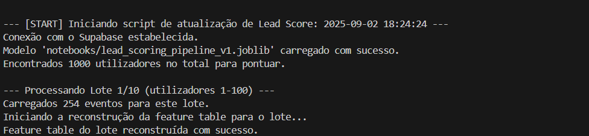

6. Automação (Produção)
6.1 Scripts Automatizados
A etapa final do projeto foi transformar o modelo de Lead Scoring em um sistema automatizado e operacional, capaz de integrar-se ao fluxo de trabalho existente e funcionar de forma autónoma como parte do negócio.
Configuração Geral
- Script Implementado: score_updater.py.
- Plataforma de Automação: Cron Job utilizando Render.
- Tarefa Definida:
- Executar diariamente.
- Conectar-se ao banco de dados (BD).
- Identificar os utilizadores sem pontuação de lead (lead_score).
- Carregar o pipeline previamente treinado (lead_scoring_pipeline_v1.joblib) para realizar previsões.
- Atualizar a coluna lead_score na tabela users.
6.2 Desafio de Produção e Solução: Processamento em Lotes
Durante os testes locais do script de produção, foi identificado um problema operacional:
Erro Encontrado: 414 Request-URI Too Large.
Causa: O script tentava buscar os eventos de todos os utilizadores (1.000) em uma única requisição à API, o que gerava uma URL muito longa para o servidor lidar.
Solução Implementada:
Foi adicionada uma lógica de processamento em lotes (batch processing) para dividir os utilizadores em grupos menores e processá-los separadamente. Essa abordagem permitiu ao sistema operar de maneira mais eficiente e evitar sobrecarga. Os lotes foram definidos com um tamanho fixo de 100 utilizadores, e o script foi ajustado para processar cada lote de forma independente. Esse ajuste garantiu estabilidade e robustez na operação automatizada.
Execução Local: Validação
O script foi testado localmente em 10 lotes de 100 utilizadores, para validar a lógica implementada. As imagens abaixo ilustram diferentes momentos do processo: Início do Processo (Lote 1 de 10):

Meio do Processo (Lote 5 de 10):
Fim do Processo (Lote 10 de 10):
6.3 Monitoramento e Desafios de Implantação
Após validar o script localmente, foi realizado o deploy na plataforma Render. Esse processo foi monitorado via o dashboard de "Events", que revelou os desafios clássicos encontrados no mundo real durante a implantação de sistemas em produção.
Desafios Identificados e Soluções:
- Erro (07:37:35 PM): ModuleNotFoundError: No module named 'pandas'
- Causa: O arquivo requirements.txt enviado para o Render não incluía dependências fundamentais como pandas e numpy.
- Solução: As bibliotecas foram adicionadas ao arquivo requirements.txt e um novo commit foi enviado ao repositório.
- Erro (07:47:28 PM): Invalid API key
- Causa: Após corrigir o primeiro bug, o script falhou ao conectar-se ao Supabase devido a credenciais incorretas (SUPABASE_KEY) configuradas nas Variáveis de Ambiente do Render.
- Solução: As credenciais foram corrigidas diretamente no dashboard de variáveis de ambiente do Render.
Validação do Build e Execução Bem-Sucedida
Após implementar as correções descritas acima, o build foi executado com sucesso. O dashboard do Render confirmou que todas as dependências estavam instaladas corretamente e que o script estava pronto para execução.
 A execução inicial do Cron Job ocorreu às 08:18:56 PM sem erros ("Process completed"). O resultado final foi validado diretamente no banco de dados Supabase, onde a coluna lead_score foi preenchida corretamente para todos os utilizadores.
A execução inicial do Cron Job ocorreu às 08:18:56 PM sem erros ("Process completed"). O resultado final foi validado diretamente no banco de dados Supabase, onde a coluna lead_score foi preenchida corretamente para todos os utilizadores.

6.4 Prova de Execução Autónoma: Confiabilidade do Sistema
Para comprovar que o sistema automatizado é confiável a longo prazo, os logs de eventos do Render foram consultados após vários dias da implementação. O cron job foi executado diariamente e pontualmente, conforme esperado, nos dias 14, 15 e 16 de setembro, sem interrupções.

Resultados Consolidados:
- O pipeline foi capaz de gerar scores para novos utilizadores automaticamente, sem intervenção manual.
- O sistema demonstrou alta confiabilidade, processando as previsões sem falhas consecutivas desde o primeiro deploy, validando a robustez do processo automatizado.
Considerações Finais
- Lógica de Batch Processing: A solução desenvolvida para dividir o processamento em lotes de 100 garantiu estabilidade e eficiência, resolvendo o problema encontrado nos testes locais.
- Monitoramento e Correção em Produção: Os desafios de produção foram diagnosticados e corrigidos rapidamente, demonstrando a robustez e a adaptabilidade da equipe frente a problemas comuns do mundo real.
- Automação e Escalabilidade: O cron job configurado no Render está funcionando diariamente de forma autónoma e pode escalar facilmente para bases de dados maiores, bastando ajustar o tamanho dos lotes ou os horários de execução.
- Próximos Passos:
- Continuar monitorando a execução do cron job através do dashboard de eventos para antecipar possíveis falhas futuras.
- Incluir métricas de performance na monitorização dos lotes processados para garantir otimização contínua.